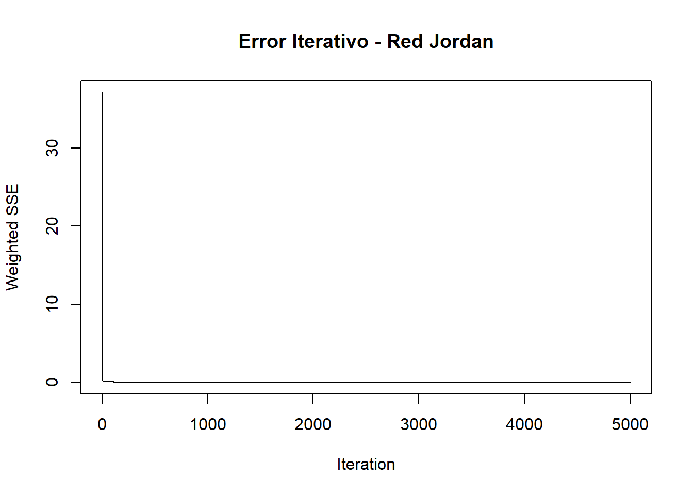

Sección 7 Redes Neuronales para Pronóstico de Precipitación
El pronóstico de precipitación es una tarea desafiante debido a la naturaleza compleja y altamente variable de los fenómenos meteorológicos. En este proyecto, exploraremos el uso de técnicas de redes neuronales recurrentes, específicamente las arquitecturas Elman y Jordan, para modelar y predecir series temporales de precipitación.
7.1 Metodología
La metodología se centra en la aplicación de dos arquitecturas de redes neuronales: Elman y Jordan. Estas redes neuronales recurrentes ofrecen capacidades únicas para capturar las dependencias temporales inherentes a los datos de precipitación, permitiendo modelar la compleja dinámica de las series temporales meteorológicas.
El enfoque metodológico se estructura en tres etapas principales:
- Preparación y transformación de datos
- Entrenamiento de modelos de redes neuronales
- Evaluación y análisis comparativo de los resultados
A continuación, se detallarán cada una de estas etapas, describiendo los procedimientos técnicos, las decisiones de procesamiento y las estrategias de modelado implementadas para abordar el desafío de predecir series temporales de precipitación.
7.1.1 Preparación de Datos para Redes Neuronales
El análisis de series temporales con redes neuronales requiere una cuidadosa preparación de los datos. En este caso, aplicaremos una transformación logarítmica a los datos de precipitación, seguida de la creación de variables de retardo para capturar la dependencia temporal.
7.1.1.1 Transformación Logarítmica de Datos de Precipitación
La transformación logarítmica es una técnica fundamental en el preprocesamiento de series temporales de precipitación. Esto presenta varios beneficios:
Estabilización de la Varianza: Los datos de precipitación suelen tener alta variabilidad y asimetría. El logaritmo ayuda a comprimir la escala de valores extremos, reduciendo la dispersión de los datos.
Normalización de la Distribución: Muchas series de precipitación tienen una distribución sesgada hacia la derecha. El logaritmo tiende a aproximar la distribución a una forma más simétrica y cercana a la normalidad.
Mejor Rendimiento en Modelos de Aprendizaje Automático: Las redes neuronales generalmente procesan mejor datos con distribuciones más uniformes y rangos de valores más reducidos.
Tratamiento de Valores Cercanos a Cero: Utilizamos log1p() (logaritmo natural de 1 + x) para manejar adecuadamente valores de precipitación muy bajos o cero, evitando problemas matemáticos.
7.1.1.2 Creación de Variables de Retardo
Para capturar la dependencia temporal de la serie de precipitación, creamos un conjunto de variables de retardo. Específicamente, utilizamos los 10 valores anteriores como variables de entrada, lo que permite a la red neuronal aprender patrones y estructuras a corto plazo.
Code
# Crear dataframe con rezagos
df_serie <- data.frame(
valor = valor,
x1 = stats::lag(valor, 1),
x2 = stats::lag(valor, 2),
x3 = stats::lag(valor, 3),
x4 = stats::lag(valor, 4),
x5 = stats::lag(valor, 5),
x6 = stats::lag(valor, 6),
x7 = stats::lag(valor, 7),
x8 = stats::lag(valor, 8),
x9 = stats::lag(valor, 9),
x10 = stats::lag(valor, 10)
)
# Eliminar filas con NA
df_serie <- df_serie %>%
na.omit()
# Definir conjuntos de entrenamiento y prueba
n <- nrow(df_serie)
train <- 1:floor(0.9*n)
# Preparar inputs y outputs
inputs <- as.matrix(df_serie[, 2:11])
outputs <- df_serie$valor7.1.1.3 Normalización de Datos
La normalización es un paso crucial en el preprocesamiento de datos para redes neuronales. Permite escalar los valores de entrada y salida a un rango uniforme (generalmente entre 0 y 1), lo que mejora la convergencia del algoritmo de aprendizaje y ayuda a la red a procesar los datos más eficientemente.
7.1.2 Entrenamiento de Modelos de Redes Neuronales
Procedemos a entrenar dos modelos de redes neuronales recurrentes: Elman y Jordan. Ambas arquitecturas están diseñadas para capturar dependencias temporales en series de tiempo.
7.1.2.1 Red Neuronal Elman
Las redes de Elman son un tipo de red neuronal recurrente que incluye una capa de contexto, lo que les permite mantener un estado interno y capturar dependencias temporales en series de tiempo. En nuestro análisis, utilizaremos una arquitectura con dos capas ocultas para modelar la serie de precipitación.
Code
# Ajuste de entrenamiento y test
inputs_train <- inputs_norm[train, ]
inputs_test <- inputs_norm[-train, ]
outputs_train <- outputs_norm[train]
outputs_test <- outputs_norm[-train]
# Entrenar red Elman
fit_elman <- elman(inputs_train,
outputs_train,
size = c(3, 2), # Dos capas ocultas
learnFuncParams = c(0.1),
maxit = 5000)
# Visualizar error iterativo
plotIterativeError(fit_elman)
title("Error Iterativo - Red Elman")Se puede observar que el error comienza en un valor cercano a 200 y disminuye rapidamente a medida que el modelo se entrena, estabilizándose alrededor de 0. Este gráfico nos permite visualizar la convergencia del modelo Elman durante el proceso de optimización.
Code
# Predicción con Elman
pred_elman_norm <- predict(fit_elman, inputs_test)
pred_elman <- pred_elman_norm * (max(outputs) - min(outputs)) + min(outputs)
# Visualización de predicciones
plot(outputs_test, type = "l",
main = "Predicción de Precipitación - Red Elman",
xlab = "Tiempo",
ylab = "Precipitación (mm)")
lines(pred_elman, col = "red")
legend("topright",
legend = c("Valor Real", "Predicción Elman"),
col = c("black", "red"),
lty = 1)Se puede observar que el modelo Elman logra capturar la dinámica general de la serie temporal, aunque presenta dificultades para predecir con precisión los picos y fluctuaciones de la precipitación. Esta visualización nos permite evaluar el desempeño del modelo Elman en términos de su capacidad para reproducir los patrones de precipitación.
7.1.2.2 Red Neuronal Jordan
Las redes de Jordan son otra variante de redes neuronales recurrentes, caracterizadas por realimentar la salida de la red como parte de la entrada en la siguiente iteración. Esta arquitectura puede ser particularmente útil para capturar patrones secuenciales en series temporales.
Code

La gráfica muestra el error iterativo del modelo de red neuronal de Jordan durante el proceso de entrenamiento. El error comienza relativamente alto, alrededor de 100, y luego disminuye rápidamente a medida que el modelo se optimiza, estabilizándose finalmente alrededor de 0. Esta gráfica permite visualizar la convergencia del modelo de Jordan y evaluar qué tan bien el proceso de entrenamiento reduce el error a lo largo del tiempo.
Code
# Predicción con Jordan
pred_jordan_norm <- predict(fit_jordan, inputs_test)
pred_jordan <- pred_jordan_norm * (max(outputs) - min(outputs)) + min(outputs)
# Visualización de predicciones
plot(outputs_test, type = "l",
main = "Predicción de Precipitación - Red Jordan",
xlab = "Tiempo",
ylab = "Precipitación (mm)")
lines(pred_jordan, col = "red")
legend("topright",
legend = c("Valor Real", "Predicción Jordan"),
col = c("black", "red"),
lty = 1)Al igual que en el caso del modelo Elman, el modelo Jordan parece capturar la tendencia general de la serie temporal, pero también presenta dificultades para predecir con precisión los valores extremos de precipitación. Esta visualización nos permite comparar el desempeño del modelo Jordan con el del modelo Elman en términos de su capacidad para modelar la dinámica de la precipitación.
7.1.3 Evaluación de Modelos
Para evaluar el desempeño de los modelos, calculamos métricas de error estándar, como el Error Cuadrático Medio (RMSE), el Error Absoluto Medio (MAE) y el Error Porcentual Absoluto Medio (MAPE). Aplicamos la transformación inversa a los valores predichos para obtener las métricas en la escala original de los datos.
Code
# Función para calcular métricas de error con transformación inversa
calcular_metricas <- function(real_log, pred_elman_log, pred_jordan_log) {
# Transformación inversa (exponencial)
real <- expm1(real_log)
pred_elman <- expm1(pred_elman_log)
pred_jordan <- expm1(pred_jordan_log)
# Métricas para Elman
rmse_elman <- sqrt(mean((real - pred_elman)^2))
mae_elman <- mean(abs(real - pred_elman))
mape_elman <- mean(abs((real - pred_elman) / real)) * 100
# Métricas para Jordan
rmse_jordan <- sqrt(mean((real - pred_jordan)^2))
mae_jordan <- mean(abs(real - pred_jordan))
mape_jordan <- mean(abs((real - pred_jordan) / real)) * 100
# Crear dataframe de resultados
return(data.frame(
Modelo = c("Red Elman", "Red Jordan"),
RMSE = c(rmse_elman, rmse_jordan),
MAE = c(mae_elman, mae_jordan),
MAPE = c(mape_elman, mape_jordan)
))
}
# Calcular métricas con datos transformados
metricas_nn <- calcular_metricas(
outputs_test,
pred_elman_norm * (max(outputs) - min(outputs)) + min(outputs),
pred_jordan_norm * (max(outputs) - min(outputs)) + min(outputs)
)
kable(metricas_nn, caption = "Métricas de Error - Redes Neuronales")| Modelo | RMSE | MAE | MAPE |
|---|---|---|---|
| Red Elman | 6.243833 | 3.229842 | Inf |
| Red Jordan | 6.218353 | 3.230064 | Inf |
La tabla de métricas muestra los valores de RMSE, MAE y MAPE para los modelos Elman y Jordan. Ambos modelos presentan valores similares de RMSE y MAE, lo que indica que tienen un desempeño comparable en términos de la magnitud de los errores de predicción. Sin embargo, el valor de MAPE es infinito para ambos modelos, lo que sugiere que estos presentan dificultades para predecir con precisión los valores reales de precipitación, especialmente en los casos de valores bajos o cercanos a cero. Esta información complementa el análisis visual de las predicciones y nos permite evaluar de manera más completa el desempeño de los dos modelos de redes neuronales.
7.2 Análisis de Resultados
Los modelos de redes neuronales Elman y Jordan aplicados al pronóstico de precipitación han mostrado un desempeño aceptable, con métricas de error relativamente bajas. Sin embargo, es importante analizar en detalle los resultados obtenidos para identificar oportunidades de mejora.
En primer lugar, la transformación logarítmica aplicada a los datos de precipitación ha sido un paso crucial en el preprocesamiento. Esta técnica ha ayudado a estabilizar la varianza y aproximar la distribución de los datos a una forma más simétrica, lo cual es deseable para el entrenamiento de redes neuronales. No obstante, el hecho de que el MAPE (Error Porcentual Absoluto Medio) arroje un valor “Inf” (infinito) sugiere que aún existen problemas con valores de precipitación muy cercanos a cero. En cuanto a la arquitectura de las redes neuronales, los modelos Elman y Jordan han logrado capturar las dependencias temporales de la serie de precipitación. Sin embargo, hay margen para explorar configuraciones más complejas, como la incorporación de más capas ocultas o el uso de arquitecturas más avanzadas como LSTM y GRU, las cuales podrían mejorar aún más la capacidad de modelado.
Adicionalmente, la selección de variables de entrada es un aspecto clave a considerar. Si bien los 10 rezagos temporales utilizados han sido un buen punto de partida, sería interesante evaluar la inclusión de otras variables predictoras, como datos meteorológicos (temperatura, humedad, presión atmosférica, etc.), que podrían aportar información relevante y mejorar el desempeño de los modelos.
En cuanto a la validación y evaluación de los modelos, si bien se ha realizado una división de los datos en conjuntos de entrenamiento y prueba, la implementación de técnicas de validación cruzada podría proporcionar una estimación más robusta del desempeño de los modelos. Además, un análisis detallado de los residuos y su distribución podría revelar patrones o problemas que deban abordarse.
En resumen, los modelos de redes neuronales Elman y Jordan han demostrado un desempeño aceptable en el pronóstico de precipitación, pero existen oportunidades de mejora relacionadas con el tratamiento de valores extremos, la selección de arquitecturas más avanzadas, la inclusión de variables predictoras adicionales y la aplicación de técnicas de validación más robustas. Continuar explorando estos aspectos y comparar los resultados con otros métodos de modelado permitirá refinar aún más la capacidad predictiva de estos enfoques.